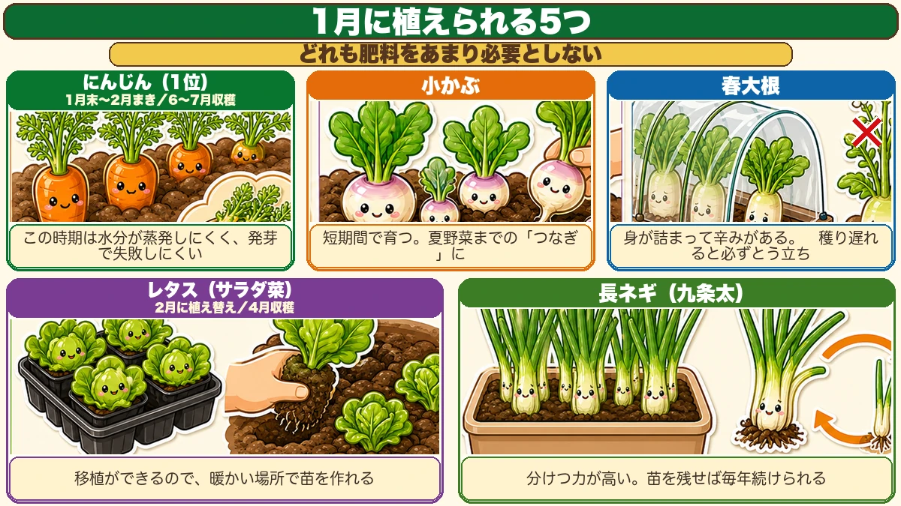
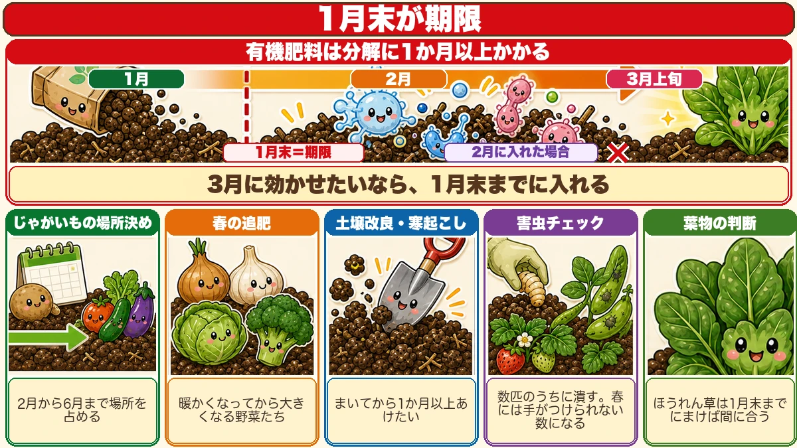
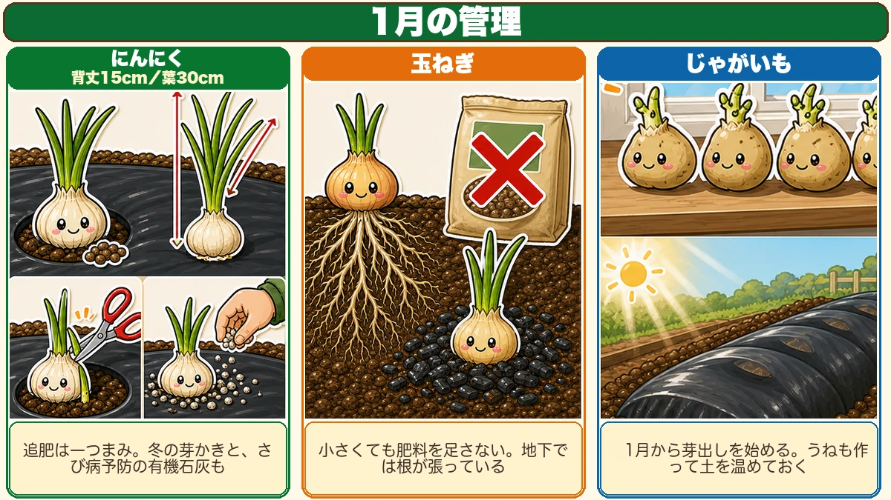

January is where the gap opens 🌱 The month everyone takes off
🗨️ "January's a month off, isn't it?"
🗨️ "There's nothing you can do."
🗨️ "I'll get serious in spring."
Hello, I'm Eiko. Eight years of growing vegetables organically and without pesticides, and a teaching licence in science.
The monthly instalment — January.
The point, up front:
The people who start in January get the most out of the year.
The reasoning is plain. February and March arrive with everything at once — raising plants, soil preparation, deciding the potato ground. And January is the emptiest month of the year.
The same total work spread out is lighter each time. So anything that can be brought forward belongs here.
Being able to move in the month everyone else takes off is what changes the spring ☺️
The garden this month
January genuinely has little to plant, and the usual advice is to start in February. With a little adjustment you can start now — and this month has an advantage no other month has.
Seed rarely fails in January
Which sounds wrong. Why is summer sowing hard? Not insects, not heat — the surface dries out and the seed desiccates.
In January that can't happen. Low temperatures and short days mean very little evaporation.
Germination takes longer. But the single biggest cause of failure is absent.
Slow is not the same as unreliable. January is slow and certain.
Don't leave the empty beds idle
The bed that held mooli or Chinese cabbage is now empty, and most people won't plant it until the summer crops go in — four months away.
That's a waste, and an empty bed doesn't recover by resting. Soil with something growing in it keeps more microbial life than bare soil — the same logic as green manure.
So grow a bridging crop: one harvest in the gap before summer.
Five things to plant

What this diagram says （図解の文字）
- Five things you can plant in January — none of them needs much fertiliser
- Carrots (first choice) — sown late January to February, harvested early summer
- At this time of year moisture doesn't evaporate, so germination rarely fails
- Small turnips — fast growing; the bridge to the summer crops
① Carrots
Far and away the best of this list — for the flavour. A home-grown carrot is a different thing from a bought one in sweetness and aroma.
And the thinnings: carrot leaves make an excellent fritter. You can't buy them, so it's a grower's privilege.
- Sow late January into February
- Harvest in early summer
- Direct sow only — so it needs proper frost protection
And here the earlier point pays: carrots' great difficulty is germination, and in January nothing dries out. A carrot that germinates is a carrot you've grown. It takes time, and you never lose the row to drought. I find it easier than a summer sowing.
Sow generously to be sure of a stand.
② Small turnips
Growable almost year-round and quick — which makes them the ideal bridging crop.
- Well protected, harvest from mid spring
- Harvest by thinning, repeatedly
- The bed is free again in time for the next crop
Having something to pick in a bare month is worth a lot.
③ Spring mooli
The fourth sowing of the year. Change the month and one vegetable runs most of the calendar.
The flavour differs from a winter one — denser, with more heat in it.
- Direct sow; it can't be transplanted
- Build a decent tunnel — keep it warm
- Well warmed, harvest from mid spring
One caution: leave it too long and it bolts, without exception. Pick at a reasonable size, and choose a bolt-resistant variety.
④ Lettuce
Lettuce harvested in early spring is as good as it gets. Cold-tolerant, with plenty of varieties.
Its advantage here is that it transplants. Raise plants somewhere warm and move them out once they're a decent size.
- Plant out in late winter
- Harvest from mid spring
- Harvest promptly — it bolts
⑤ Leeks from seed
If you're growing leeks from seed, this is the time. An autumn sowing works but takes much longer; a January sowing makes a perfectly good plant.
- Sow in a pot or tray somewhere warm
- Plant out in late spring
- Move them once more in late summer if you can, and you'll have fine leeks through autumn and winter
And the part I like: keep a few plants back each year and you have next year's plants. An endless loop — you stop buying seed.
Five things to finish by the end of the month

What this diagram says （図解の文字）
- The end of January is the deadline
- Organic fertiliser takes over a month to break down
- January → February → early March ／ end of January = the deadline
- × put in during February — to act in March it has to be in by the end of January
- Deciding the potato ground — it occupies the bed from late winter to early summer
Organic growing runs on months, not days. Decomposition and soil building both take that long, which is why there are deadlines.
① Decide where the potatoes go
Seed potatoes go on sale in late winter. The easily missed part is that potatoes hold that ground from late winter through to early summer. Overlap it with where you want summer crops and you're stuck. Decide by mid-month and prepare.
② The spring feed, by the end of the month
The most important deadline. Onions, garlic, spring cabbage, spring broccoli — everything that bulks up as it warms.
Organic feed takes over a month to break down, and plants wake from dormancy in early spring. To have it working then, it has to be in by the end of January. Applied in February, it starts acting after the window that mattered.
③ Soil improvement and winter digging
By the second half of the month, so there's a clear month before anything is planted.
④ Pest check
Dig out pupae; squash the aphids on broad beans and strawberries while they're countable.
⑤ Order seed
While the choice is still there.
Looking after what's growing

What this diagram says （図解の文字）
- January management
- Garlic — 15 cm tall, 30 cm of leaf. A pinch of feed; the winter shoot check; organic lime against rust
- Onions × — don't feed small plants. The roots are spreading underground
- Potatoes — start chitting in January, and make the beds
- Garlic — benchmark 15 cm tall with 30 cm of leaf. A pinch of feed, check for a second shoot, and apply organic lime against rust
- Onions — don't feed them for being small. The roots are doing the work
- Potatoes — start chitting, and get the beds made
The science: why January germination is reliable 🔬
Germination needs water, oxygen and warmth. January is short of warmth and generous with the other two — and crucially, water is the one you can lose in an afternoon.
Evaporation rises steeply with temperature and sunlight. In summer the top centimetre of soil can go from damp to dust in a day, and a seed part-way through germinating has no way back.
In January, that same centimetre stays damp for days. The seed takes far longer — and is never interrupted.
Which is the whole trade: you exchange speed for certainty ☺️
To sum up
- ✅ Starting in January spreads the load that February and March pile up
- ✅ Germination rarely fails now, because nothing dries out
- ✅ Don't leave beds idle — grow a bridging crop
- ✅ Five to plant: carrots / turnips / spring mooli / lettuce / leeks from seed
- ✅ None of them needs much feed, so they follow straight on
- ✅ Carrots: direct sow with protection; sow generously
- ✅ Mooli bolts if left — pick at a reasonable size
- ✅ Keep a few leek plants back for next year's plants
- ✅ Decide the potato ground now
- ✅ The spring feed must be in by the end of the month
- ✅ Finish digging, check pests, order seed
- ✅ Don't feed small onions
You don't have to do all of it. This month, just put the spring feed on. That one job is the difference in March 🌱
Thank you for reading!